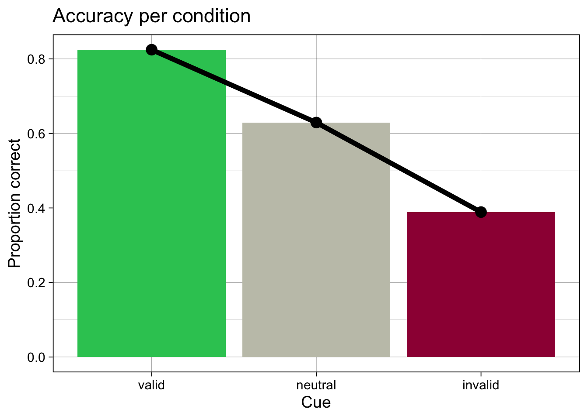
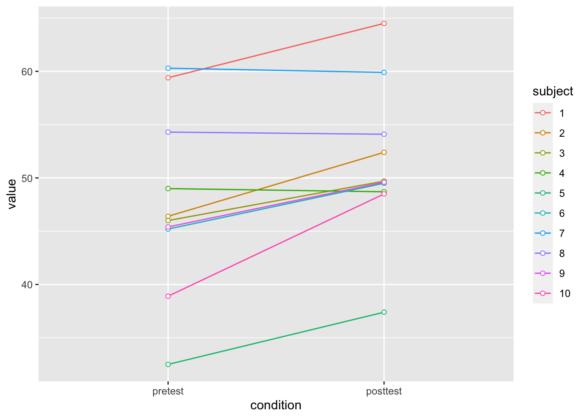
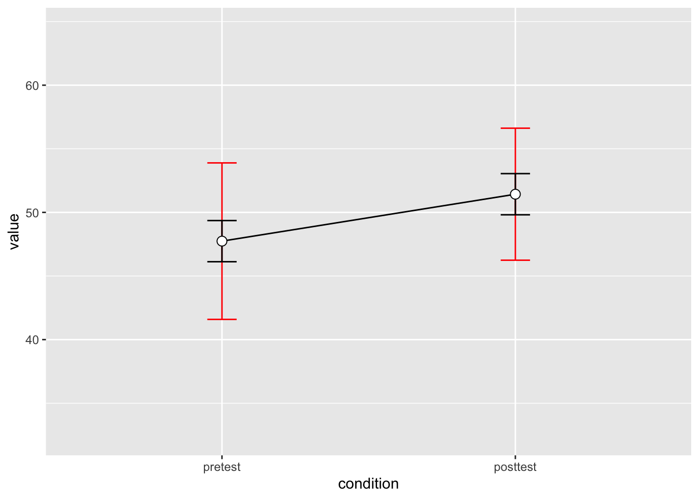
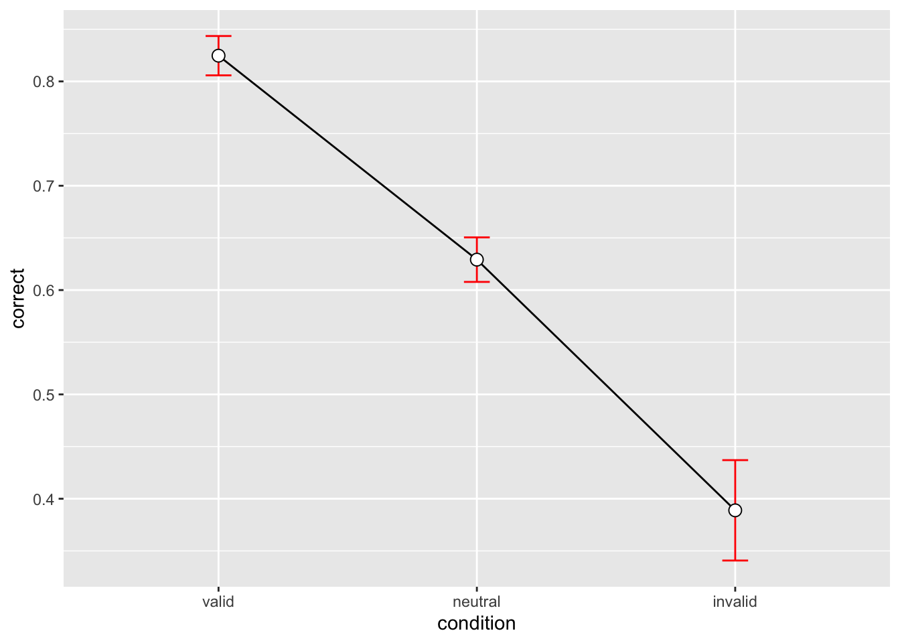
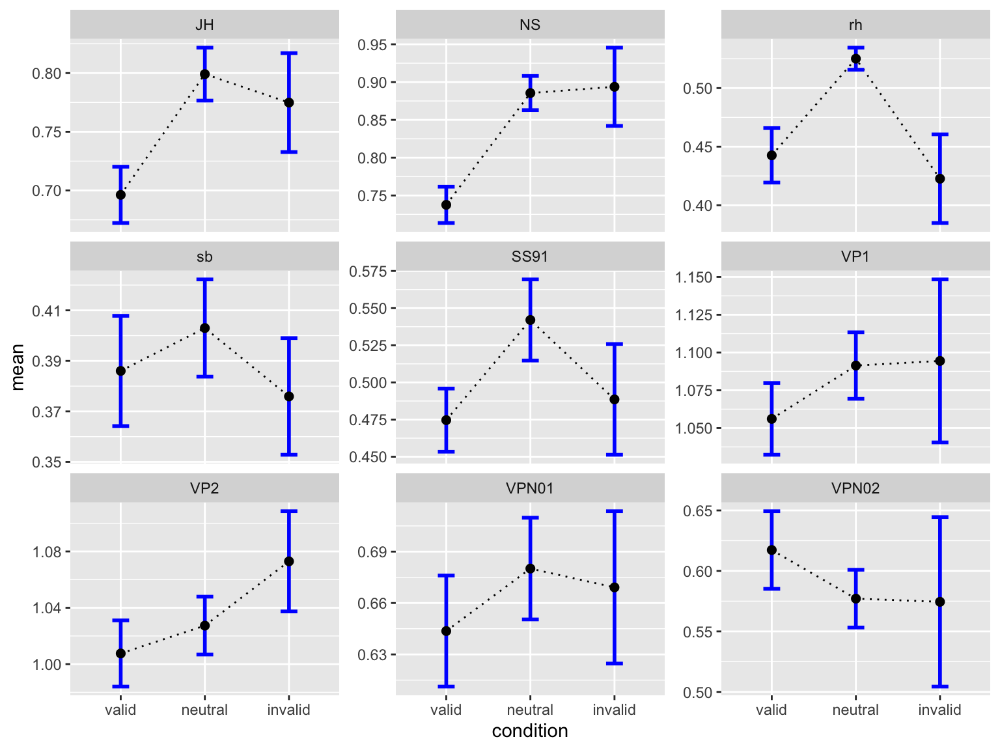

Aggregierte Statistiken
Daten aus Verhaltensexperimenten zusammenfassen.
![]()
In der heutigen Sitzung lernen wir:
- Zusammenfassende Statistiken berechnen.
- In within-subject Designs aggregierte Statistiken berechnen.
- Standardfehler berechnen, welche Messwiederholungen berücksichtigen.
Wir haben in den vorherigen Kapiteln gesehen, wie wir Daten aus Verhaltensexperimenten in R einlesen und bearbeiten können. In diesem Kapitel werden wir uns mit der Frage beschäftigen, wie wir zusammenfassende Statistiken erstellen können, um diese grafisch darzustellen und zu interpretieren. Da wir uns in den Neurowissenschaften meist mit within-subject Designs beschäftigen, werden wir uns in diesem Kapitel auf Messwiederholungsdaten konzentrieren.
Daten aus dem RDK Experiment einlesen
Zum Schluss der letzten Sitzung haben wir für jede Versuchsperson pro Bedingung die accuracy berechnet, und grafisch dargestellt. Wir wiederholen diesen Schritt hier nochmals, um die Daten für die folgenden Analysen vorzubereiten.
Zuerst laden wir das tidyverse Package und lesen das gespeicherte csv File ein.
Im ersten Schritt konvertieren wir wieder alle Gruppierungsvariablen zu Faktoren. Ob eine Variable als factor definiert ist, wird als Attribut gespeichert. Attribute werden aber in einem .csv. File nicht mitgespeichert; deshalb müssen wir diesen Schritt nach dem Einlesen jedesmal neu ausführen.
glimpse(data)Rows: 1,440
Columns: 9
$ trial <dbl> 0, 1, 2, 3, 4, 5, 6, 7, 8, 9, 10, 11, 12, 13, 14, 15, 16, 17…
$ ID <fct> JH, JH, JH, JH, JH, JH, JH, JH, JH, JH, JH, JH, JH, JH, JH, …
$ cue <fct> right, right, none, none, left, none, none, left, left, none…
$ direction <fct> right, right, right, right, left, right, left, left, right, …
$ response <dbl> 1, 1, 0, 1, 1, 1, 1, 0, 0, 1, 0, 0, 0, 0, 1, 1, 0, 0, 1, 0, …
$ rt <dbl> 0.7136441, 0.6271285, 0.6703410, 0.5738488, 0.8405913, 0.667…
$ choice <fct> right, right, left, right, right, right, right, left, left, …
$ correct <dbl> 1, 1, 0, 1, 0, 1, 0, 1, 0, 1, 1, 1, 1, 1, 1, 1, 1, 1, 1, 1, …
$ condition <fct> valid, valid, neutral, neutral, valid, neutral, neutral, val…Die ersten 20 Zeilen der Tabelle sehen wie folgt aus:
data |>
slice_head(n = 10)# A tibble: 10 × 9
trial ID cue direction response rt choice correct condition
<dbl> <fct> <fct> <fct> <dbl> <dbl> <fct> <dbl> <fct>
1 0 JH right right 1 0.714 right 1 valid
2 1 JH right right 1 0.627 right 1 valid
3 2 JH none right 0 0.670 left 0 neutral
4 3 JH none right 1 0.574 right 1 neutral
5 4 JH left left 1 0.841 right 0 valid
6 5 JH none right 1 0.668 right 1 neutral
7 6 JH none left 1 1.12 right 0 neutral
8 7 JH left left 0 0.640 left 1 valid
9 8 JH left right 0 1.13 left 0 invalid
10 9 JH none right 1 1.03 right 1 neutral Individuelle und Aggregierte Kennzahlen
In neurowissenschaftlichen Fragestellungen interessieren wir uns sowohl für aggregierte Statistiken, als auch für individuelle Kennzahlen, d.h. für die Kennzahlen, die wir erhalten, wenn wir die Daten für jede Versuchsperson einzeln betrachten. Wir schauen uns dies am Beispiel der korrekten Antworten in der RDK Entscheidungsaufgabe an.
- Überlegen Sie sich, in welchen Fällen Sie aggregierte Statistiken benötigen, und in welchen Fällen individuelle Kennzahlen.
Korrekte Entscheidungen
Wir schauen uns zuerst (wie im letzten Kapitel) die Anzahl korrekter Entscheidungen an. Wir können diese entweder für jede Person in jeder Bedingung berechnen, oder für jede Bedingung, aggregiert über alle Personen.
Individuell für jede Person in jeder Bedingung
accuracy_individual <- data |>
group_by(ID, condition) |>
summarise(
N = n(),
ncorrect = sum(correct),
accuracy = mean(correct)
)`summarise()` has grouped output by 'ID'. You can override using the `.groups`
argument.accuracy_individual# A tibble: 27 × 5
# Groups: ID [9]
ID condition N ncorrect accuracy
<fct> <fct> <int> <dbl> <dbl>
1 JH valid 64 60 0.938
2 JH neutral 80 66 0.825
3 JH invalid 16 13 0.812
4 NS valid 64 58 0.906
5 NS neutral 80 56 0.7
6 NS invalid 16 11 0.688
7 rh valid 64 61 0.953
8 rh neutral 80 64 0.8
9 rh invalid 16 2 0.125
10 sb valid 64 62 0.969
# ℹ 17 more rowsaccuracy_individual |>
ggplot(aes(x = condition, y = accuracy, fill = condition)) +
geom_col() +
geom_line(aes(group = ID), linewidth = 2) +
geom_point(size = 4) +
scale_fill_manual(values = c(invalid = "#9E0142",
neutral = "#C4C4B7",
valid = "#2EC762")) +
labs(x = "Cue",
y = "Proportion correct",
title = "Accuracy per person/condition") +
facet_wrap(~ID) +
theme_linedraw(base_size = 14) +
theme(legend.position = "none")Pro Bedingung, über alle Personen aggregiert
accuracy_aggregated <- data |>
group_by(condition) |>
summarise(N = n(),
ncorrect = sum(correct),
accuracy = mean(correct))
accuracy_aggregated# A tibble: 3 × 4
condition N ncorrect accuracy
<fct> <int> <dbl> <dbl>
1 valid 576 475 0.825
2 neutral 720 453 0.629
3 invalid 144 56 0.389accuracy_aggregated |>
ggplot(aes(x = condition, y = accuracy, fill = condition)) +
geom_col() +
geom_line(aes(group = 1), linewidth = 2) +
geom_point(size = 4) +
scale_fill_manual(values = c(invalid = "#9E0142",
neutral = "#C4C4B7",
valid = "#2EC762")) +
labs(x = "Cue",
y = "Proportion correct",
title = "Accuracy per condition") +
theme_linedraw(base_size = 14) +
theme(legend.position = "none")
Wir beurteilen Sie die beiden obenstehenden Plots. Was fällt Ihnen auf? Sind die Mittelwerte aussagekräftig?
Es fehlt eine Darstellung der Unsicherheit, die wir in der Schätzung des Mittelwerts haben.
Standardfehler
Wir wollen wir nicht mehr nur den Mittelwert betrachten, sondern auch die Standardabweichung und den Standardfehler. Letzteres ist eine Mass für die Unsicherheit, die wir in der Schätzung des Mittelwerts haben. Leider gibt es keine Funktion in R, die uns den Standardfehler berechnet. Der Standardfehler ist definiert als die Standardabweichung geteilt durch die Wurzel aus der Anzahl der Datenpunkte: \[SE = sd/ \sqrt{n}\].
Wir können eine solche Funktion einfach selber definieren. sd() berechnet die Standardabweichung eines Vektors, und die Anzahl Datenpunkte ist die Länge des Vektors (length()), den wir als Argument übergeben.
Pro Bedingung, über alle Personen aggregiert
Eine Möglichkeit wäre, die Anzahl korrekter Entscheidungen in jeder Bedingung insgesamt, d.h. über alle Personen aggregiert, zu berechnen. Wir berechnen dabei den Standardfehler des Mittelwertes um ein Mass für die Unsicherheit zu enthalten, mit der wir die Mittelwerte schätzen können.
data |>
group_by(condition) |>
summarise(
n = n(),
ncorrect = sum(correct),
accuracy = mean(correct),
se = se(correct)
)# A tibble: 3 × 5
condition n ncorrect accuracy se
<fct> <int> <dbl> <dbl> <dbl>
1 valid 576 475 0.825 0.0159
2 neutral 720 453 0.629 0.0180
3 invalid 144 56 0.389 0.0408- Was sagen uns diese Kennzahlen?
- Welche Informationen gehen dabei verloren?
- Überlegen Sie sich, was wir genau berechnet haben.
Ein Exkurs über within-person Standardfehler
Folgender Code erstellt einen Dataframe mit 10 Personen, die jeweils zu zwei Messzeitpunkten getestet werden. Es handelt sich also um ein within-subject Design.
Der Dataframe ist im wide Format – um die Daten zu analysieren, ist das long Format besser geeignet. Wir konvertieren vom wide ins long Format mit der Funktion pivot_longer().
dfw# A tibble: 10 × 3
subject pretest posttest
<fct> <dbl> <dbl>
1 1 59.4 64.5
2 2 46.4 52.4
3 3 46 49.7
4 4 49 48.7
5 5 32.5 37.4
6 6 45.2 49.5
7 7 60.3 59.9
8 8 54.3 54.1
9 9 45.4 49.6
10 10 38.9 48.5dfl <- dfw |>
pivot_longer(contains("test"),
names_to = "condition",
values_to = "value") |>
mutate(condition = as_factor(condition))dfl# A tibble: 20 × 3
subject condition value
<fct> <fct> <dbl>
1 1 pretest 59.4
2 1 posttest 64.5
3 2 pretest 46.4
4 2 posttest 52.4
5 3 pretest 46
6 3 posttest 49.7
7 4 pretest 49
8 4 posttest 48.7
9 5 pretest 32.5
10 5 posttest 37.4
11 6 pretest 45.2
12 6 posttest 49.5
13 7 pretest 60.3
14 7 posttest 59.9
15 8 pretest 54.3
16 8 posttest 54.1
17 9 pretest 45.4
18 9 posttest 49.6
19 10 pretest 38.9
20 10 posttest 48.5Was uns hier interessiert ist vor allem die “Verbesserung” jeder Person vom ersten zum zweiten Messzeitpunkt. Diese können wir grafisch darstellen.
# Plot the individuals
dfl |>
ggplot(aes(x=condition, y=value, colour=subject, group=subject)) +
geom_line() + geom_point(shape=21, fill="white") +
ylim(ymin,ymax)
Wir stellen fest, dass fast jede Person zum zweiten Messzeitpunkt einen höheren Wert als beim ersten aufweist. Gleichzeitig gibt es aber auch erhebliche Unterschiede zwischen den Personen in Bezug auf ihren Anfangswert. Diese interindividuellen Unterschiede sind aber hier nicht von Interesse. Wir können davon ausgehen, dass diese Unterschiede auf “stabile” Eigenschaften der Personen zurückzuführen sind. Die Personen sind also eine Quelle der Variabilität, die unsere Fragestellung “stört” - diese lautet: wie ist die Änderung zwischen den beiden Zeitpunkten?
Wir können so tun, als ob der Messzeitpunkt eine between-subject Variable wäre. In diesem Fall würden wir die Standardfehler wie folgt berechnen.
dflsum_between_1 <- dfl |>
group_by(condition) |>
summarize(
mean = mean(value),
se = se(value)
)
dflsum_between_1# A tibble: 2 × 3
condition mean se
<fct> <dbl> <dbl>
1 pretest 47.7 2.72
2 posttest 51.4 2.29Eine Alternative dazu bietet die Funktion summarySE() aus dem Rmisc Package.
# Instead of summarySEwithin, use summarySE, which treats condition as though it were a between-subjects variable
dflsum_between <- Rmisc::summarySE(data = dfl,
measurevar = "value",
groupvars = "condition",
na.rm = FALSE,
conf.interval = .95)
dflsum_between condition N value sd se ci
1 pretest 10 47.74 8.598992 2.719240 6.151348
2 posttest 10 51.43 7.253972 2.293907 5.189179Die Fehlerbalken im folgenden Plot berücksichtigen folgendermassen nicht die Tatsachen, dass ein grosser Anteil der Variabilität auf “stabile” Personenunterschiede zurückzuführen ist. In diesem Fall sind die “errorbars” sehr gross, und es sieht so aus, als ob es keinen feststellbaren Unterschied zwischen den Zeitpunkten gibt. Wir vermuten aber aufgrund der individuellen Grafiken, dass es sehr wohl einen Unterschied gibt.
dflsum_between |>
ggplot(aes(x=condition, y=value, group=1)) +
geom_line() +
geom_errorbar(width=.1, aes(ymin=value-ci, ymax=value+ci), colour="red") +
geom_point(shape=21, size=3, fill="white") +
ylim(ymin,ymax)Wenn wir nur die Unterschiede zwischen den Personen berücksichtigen könnten, hätten wir in diesem Fall kleinere Standardfehler, da wir sozusagen die Personenvariabilität subtrahieren können.
Im Rmisc Package gibt es eine solche Funktion: mit summarySEwithin() können wir korrekt Standardfehler in within-subject Designs berechnen.
dflsum <- dfl |>
Rmisc::summarySEwithin(measurevar = "value",
withinvars = "condition",
idvar = "subject",
na.rm = FALSE,
conf.interval = 0.95)Die resultierenden Fehlerbalken sind nun kleiner.
dflsum |>
ggplot(aes(x = condition, y = value, group = 1)) +
geom_line() +
geom_errorbar(width = 0.1, aes(ymin = value-ci, ymax = value+ci)) +
geom_point(shape = 21, size = 3, fill = "white") +
ylim(40,60) +
ggtitle("Correct within standard errors")Wenn wir beide Varianten zusammen darstellen, wird der Unterschiedlich offentsichtlich. In dieser Grafik sind die between Standardfehler in rot eingezeichnet; die within Standardfehler sind in schwarz.
dflsum_between |>
ggplot(aes(x=condition, y=value, group=1)) +
geom_line() +
geom_errorbar(width=.1, aes(ymin=value-ci, ymax=value+ci), colour="red") +
geom_errorbar(width=.1, aes(ymin=value-ci, ymax=value+ci), colour="black", data = dflsum) +
geom_point(shape=21, size=3, fill="white") +
ylim(ymin,ymax)
Was wir hier machen ist eigentlich einfach. Um die within Standardfehler zu berechnen, müssen wir zuerst die personen-spezifische Mittelwerte von den Daten subtrahieren, und den Gesamtmittelwert (grand mean) addieren. Dies können wir entweder mit mutate(), oder mit der Funktion normDataWithin() machen.
Mit mutate():
df_norm <- dfl |>
mutate(grand_mean = mean(value)) |>
group_by(subject) |>
mutate(person_mean = mean(value),
value_normed = value - person_mean + grand_mean)
df_norm# A tibble: 20 × 6
# Groups: subject [10]
subject condition value grand_mean person_mean value_normed
<fct> <fct> <dbl> <dbl> <dbl> <dbl>
1 1 pretest 59.4 49.6 62.0 47.0
2 1 posttest 64.5 49.6 62.0 52.1
3 2 pretest 46.4 49.6 49.4 46.6
4 2 posttest 52.4 49.6 49.4 52.6
5 3 pretest 46 49.6 47.8 47.7
6 3 posttest 49.7 49.6 47.8 51.4
7 4 pretest 49 49.6 48.8 49.7
8 4 posttest 48.7 49.6 48.8 49.4
9 5 pretest 32.5 49.6 35.0 47.1
10 5 posttest 37.4 49.6 35.0 52.0
11 6 pretest 45.2 49.6 47.4 47.4
12 6 posttest 49.5 49.6 47.4 51.7
13 7 pretest 60.3 49.6 60.1 49.8
14 7 posttest 59.9 49.6 60.1 49.4
15 8 pretest 54.3 49.6 54.2 49.7
16 8 posttest 54.1 49.6 54.2 49.5
17 9 pretest 45.4 49.6 47.5 47.5
18 9 posttest 49.6 49.6 47.5 51.7
19 10 pretest 38.9 49.6 43.7 44.8
20 10 posttest 48.5 49.6 43.7 54.4Mit normDataWithin():
dfNorm_long <- Rmisc::normDataWithin(data=dfl,
idvar="subject",
measurevar="value")
dfNorm_long subject condition value valueNormed
1 1 pretest 59.4 47.035
2 1 posttest 64.5 52.135
3 10 pretest 38.9 44.785
4 10 posttest 48.5 54.385
5 2 pretest 46.4 46.585
6 2 posttest 52.4 52.585
7 3 pretest 46.0 47.735
8 3 posttest 49.7 51.435
9 4 pretest 49.0 49.735
10 4 posttest 48.7 49.435
11 5 pretest 32.5 47.135
12 5 posttest 37.4 52.035
13 6 pretest 45.2 47.435
14 6 posttest 49.5 51.735
15 7 pretest 60.3 49.785
16 7 posttest 59.9 49.385
17 8 pretest 54.3 49.685
18 8 posttest 54.1 49.485
19 9 pretest 45.4 47.485
20 9 posttest 49.6 51.685Wenn wir nun die “normierten” Daten plotten, sind die Unterschiede zwischen den Personen “verschwunden”, weil wir eben die Daten normiert haben.
df_norm |>
ggplot(aes(x=condition, y=value_normed, colour=subject, group=subject)) +
geom_line() + geom_point(shape=21, fill="white") +
ylim(ymin, ymax)
Die Argumente der Funktion summarySEwithin() sind folgende:
-
measurevar: die outcome` Variable -
withinvars: eine o(oder mehrere) within-subject Variablen -
idvar: die Gruppierungsvariable der within-subject Variablen (Versuchsperson) -
na.rm: sollen fehlende Werte ignoriert werden?
-
conf.interval: der gewünschte Konfidenzintervall (default: 0.95)
Im Output erhalten wir die Mittelwerte der outcome Variablen für jede Stufe der within-Variable, sowie Standardabweichungen, Standardfehler und Konfidenzintervalle.
dflsum <- dfl |>
Rmisc::summarySEwithin(measurevar = "value",
withinvars = "condition",
idvar = "subject",
na.rm = FALSE,
conf.interval = 0.95)Zum Vergleich: die Berechnung der Standardfehler in dflsum berücksichtigt die Tatsache, dass Personen sich von Anfang an unterscheiden, und subtrahiert von jedem Datenpunkt den Mittelwert der Person.
dflsum condition N value sd se ci
1 pretest 10 47.74 2.262361 0.7154214 1.618396
2 posttest 10 51.43 2.262361 0.7154214 1.618396Bei der Berechnung der Standardfehler in dflsum_between haben wir im Prinzip so getan, als seien die Messzeitpunkte unabhängig voneinander. Wir haben also die Standardfehler in dflsum_between so berechnet, als ob wir die Daten in zwei unabhängige Gruppen aufgeteilt hätten.
dflsum_between condition N value sd se ci
1 pretest 10 47.74 8.598992 2.719240 6.151348
2 posttest 10 51.43 7.253972 2.293907 5.189179Accuracy mit within-person Standardfehler
Wir können nun dieses Prinzip auf unsere RDK daten anwenden. Die messwiederholte Variable ist nun nicht mehr der Messzeitunkt, sondern die cue-Bedingung, und die outcome Variable ist accuracy, also die Proportion korrekter Antworten.
accuracy_individual |>
ggplot(aes(x = condition, y = accuracy, colour = ID, group = ID)) +
geom_line() +
geom_point(shape=21, fill="white")Auch hier stellen wir fest, dass es scheinbar einen Trend gibt, dass die Proportion korrekter Antworten in der valid Bedingung hoch, und in der invalid Bedingung niedrig ist. In der neutral Bedingung liegt die accuracy dazwischen.
Ohne Berücksichtigung der Messwiederholungen erhalten wir folgende Standarfehler:
Von Hand berechnet:
datasum <- data |>
group_by(condition) |>
summarise(N = n(),
accuracy = mean(correct),
sd = sd(correct),
se = se(correct))
datasum# A tibble: 3 × 5
condition N accuracy sd se
<fct> <int> <dbl> <dbl> <dbl>
1 valid 576 0.825 0.381 0.0159
2 neutral 720 0.629 0.483 0.0180
3 invalid 144 0.389 0.489 0.0408Mit der Funktion summarySE():
datasum_2 <- data |>
Rmisc::summarySE(measurevar = "correct",
groupvars = "condition",
na.rm = FALSE,
conf.interval = 0.95)
datasum_2 condition N correct sd se ci
1 valid 576 0.8246528 0.3805943 0.01585810 0.03114686
2 neutral 720 0.6291667 0.4833637 0.01801390 0.03536613
3 invalid 144 0.3888889 0.4891996 0.04076663 0.08058308Wenn wir nun die within Standardfehler berechnen, erhalten wir folgende Ergebnisse:
datasum_3 <- data |>
Rmisc::summarySEwithin(measurevar = "correct",
withinvars = "condition",
idvar = "ID",
na.rm = FALSE,
conf.interval = 0.95)
datasum_3 condition N correct sd se ci
1 valid 576 0.8246528 0.4523391 0.01884746 0.03701827
2 neutral 720 0.6291667 0.5726512 0.02134145 0.04189901
3 invalid 144 0.3888889 0.5773528 0.04811273 0.09510406p_accuracy <- datasum_3 |>
ggplot(aes(x = condition, y = correct, group = 1)) +
geom_line() +
geom_errorbar(width = .1, aes(ymin = correct-se, ymax = correct+se), colour="red") +
geom_point(shape=21, size=3, fill="white")
p_accuracy
Reaktionszeiten
Dasselbe können wir nun auch mit den mittleren Reaktionszeiten machen.
Pro Versuchsperson
Wir fassen die Daten pro Person pro Block mit Mittelwert, Median und Standarabweichung zusammen. Wenn wir Daten anhand mehrerer statistischer Kennzahlen zusammenfassen möchten, können wir dies entweder manuell machen, oder die Funktion across() verwenden.
Einfachere Version:
Komplizierte Version:
by_subj # A tibble: 27 × 6
# Groups: ID [9]
ID condition mean median sd se
<fct> <fct> <dbl> <dbl> <dbl> <dbl>
1 JH valid 0.696 0.658 0.190 0.0240
2 JH neutral 0.799 0.733 0.202 0.0226
3 JH invalid 0.775 0.739 0.163 0.0421
4 NS valid 0.738 0.715 0.191 0.0240
5 NS neutral 0.885 0.844 0.201 0.0226
6 NS invalid 0.894 0.913 0.207 0.0518
7 rh valid 0.443 0.390 0.185 0.0233
8 rh neutral 0.525 0.503 0.0841 0.00941
9 rh invalid 0.423 0.389 0.151 0.0378
10 sb valid 0.386 0.349 0.175 0.0218
# ℹ 17 more rowsby_subj |>
ggplot(aes(x = condition, y = mean, fill = condition)) +
geom_col() +
geom_line(aes(group = ID), linewidth = 2) +
geom_point(size = 8) +
scale_fill_manual(
values = c(invalid = "#9E0142",
neutral = "#C4C4B7",
valid = "#2EC762")
) +
labs(
x = "Cue",
y = "Response time") +
theme_linedraw(base_size = 28) +
facet_wrap(~ID)Wir können selbstverständlich auch die indivuellen mittleren Reaktionszeiten mit Standardfehler plotten:
by_subj |>
ggplot(aes(condition, mean)) +
geom_line(aes(group = 1), linetype = 3) +
geom_errorbar(aes(ymin = mean-se, ymax = mean+se),
width = 0.2, size=1, color="blue") +
geom_point(size = 2) +
facet_wrap(~ID, scales = "free_y")Warning: Using `size` aesthetic for lines was deprecated in ggplot2 3.4.0.
ℹ Please use `linewidth` instead.
Über Versuchsperson aggregiert
rtsum <- data |>
drop_na(rt) |>
Rmisc::summarySEwithin(measurevar = "rt",
withinvars = "condition",
idvar = "ID",
na.rm = FALSE,
conf.interval = 0.95)
rtsum condition N rt sd se ci
1 valid 568 0.6716487 0.2482698 0.01041717 0.02046095
2 neutral 710 0.7238269 0.2449543 0.00919297 0.01804870
3 invalid 141 0.7055247 0.2204498 0.01856522 0.03670444p_rt <- rtsum |>
ggplot(aes(x = condition, y = rt, group = 1)) +
geom_line() +
geom_errorbar(width = .1, aes(ymin = rt-se, ymax = rt+se), colour="red") +
geom_point(shape=21, size=3, fill="white")p_rtWir haben oben die beiden Grafiken als Variablen p_accuracy und p_rt gespeichert. Nun können wir diese Grafiken mit dem patchwork Package kombinieren.
p_accuracy / p_rtReuse
Citation
@online{ellis2022,
author = {Ellis, Andrew},
title = {Aggregierte {Statistiken}},
date = {2022-03-27},
url = {https://kogpsy.github.io/neuroscicomplabFS23//pages/chapters/summarizing-data.html},
langid = {en}
}